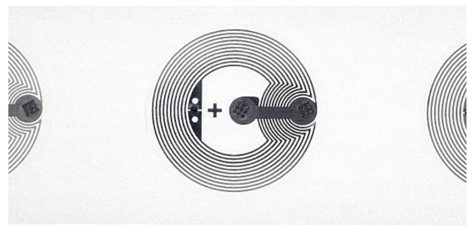
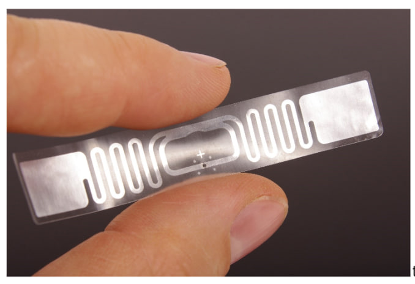
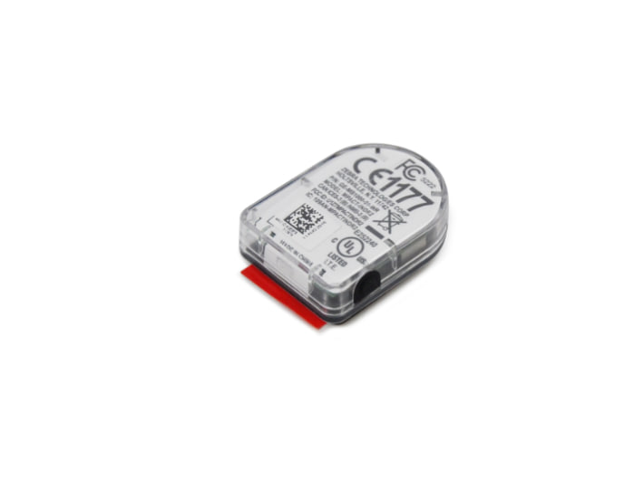

✨ If you've ever dreamt of being whisked away to Hogwarts and encountering real magic, rest assured that you experience it every day. Perhaps not as romantically as envisioned, but with a much broader scope of possibilities.
In today's world, a wizard's potion is akin to your protein shake, public magic brooms are now introduced as early Ryanair flights, and your smartphone serves as your very own magic wand 📱. However, unlike Hermione Granger, who couldn't simply pay for butterbeer by touching the seller's wallet with her wand.
Allow me to introduce you to modern payment systems such as Apple Pay and Google Pay!
☕ With just a couple of taps on your phone, you've opened your digital wallet and effortlessly paid for your morning coffee contactlessly. Even Hermione Granger couldn't have imagined such convenience! How seamlessly and effortlessly you handle high-maintenance transactions day by day, all within the blink of an eye, leaving virtually no room for daylight robbery. It truly does feel like magic! All hail this tiny marvel in your phone. Haven't seen it? I understand. Its size is a mere 2mm. But as we all know, it's not about the size but rather how it's utilized!
And utilize it does: Near Field Communication (NFC) employs a reader device that passes an electric current through a coil, generating a magnetic field. When you bring a tag (equipped with its own coil) near the reader, the magnetic field induces an electric current within the tag — all without any wires or physical contact. Once the initial handshake is complete, the stored data on the tag is transmitted wirelessly to the reader.
In the image, you can see that NFC operates with less frequency and wavelength, making it perfect for the quickest pairing and unpairing between devices. In the world of electromagnetic fields, NFC is Tinder, however, RFID is pregnancy, establishing contact even across borders; it's practically used for asset tracking.
That, my friends, is an RFID tag.
🔍 JUST FOR NERDS:
After perusing this brief introduction, you may find yourself wondering: How then is long-term communication between devices managed? Allow me to introduce you to the Bluetooth beacon: This little marvel is 100% husband material, offering the longest commitment.
Timeline for 'connecting a Bluetooth speaker': First, NFC is triggered for the swiftest possible pairing —> then, a Bluetooth beacon is activated to provide you with your favorite tunes, utilizing radio frequency signals within the 2.4 GHz ISM (Industrial, Scientific, and Medical) band to exchange data wirelessly.
💡 Practical use:
Can you imagine purchasing an NFC tag for just 1 euro, placing it on your ex's door, and each time he enters the house, his phone receives a notification saying: 'Loser'?
Yes, my friends, it's entirely plausible! Just a bit of basic coding knowledge and the satisfaction is yours.